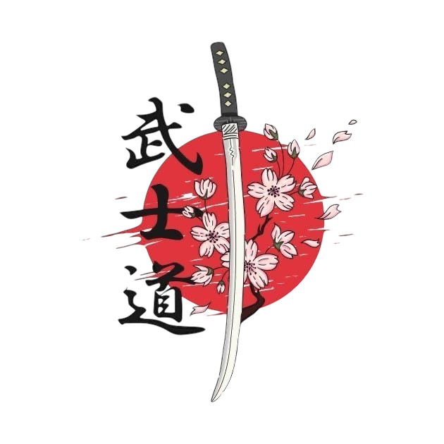

Mi Resumen
Darío Norberto Saconi

Objetivos:
- Aprender programación para dedicarme profesionalmente.
- Crear mis propios proyectos webs.
- Crear un juego.
- Seguir aprendiendo.
Educación:
- Terminando el secundario
- Realicé cursos gratuitos como en freeCodeCamp sobre:
- HTML
- CSS
- Lo básico sobre JavaScript
- En el 2021 asistí y terminé un curso de creación de videojuegos con C# en la Universidad Tecnológica Nacional (UTN).
- Terminé un curso gratuito de SQL (básico)
Habilidades:
- Siempre me interesó la tecnología y la computación así que desde chico soy autodidacta.
- Busco alternativas si aparecen problemas, tengo bien entrenada la paciencia.
- Presto mucha atención.
- Soy comunicativo.
Experiencia laboral: